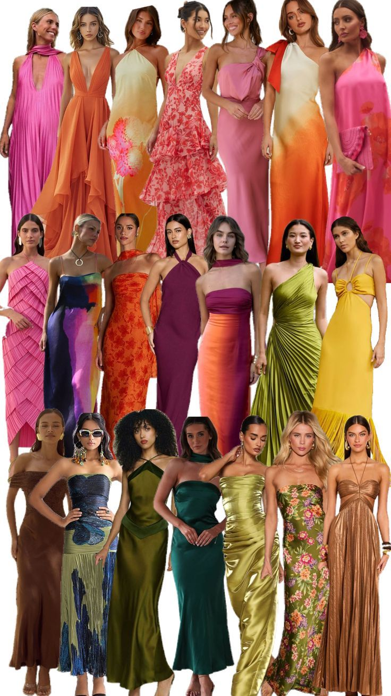
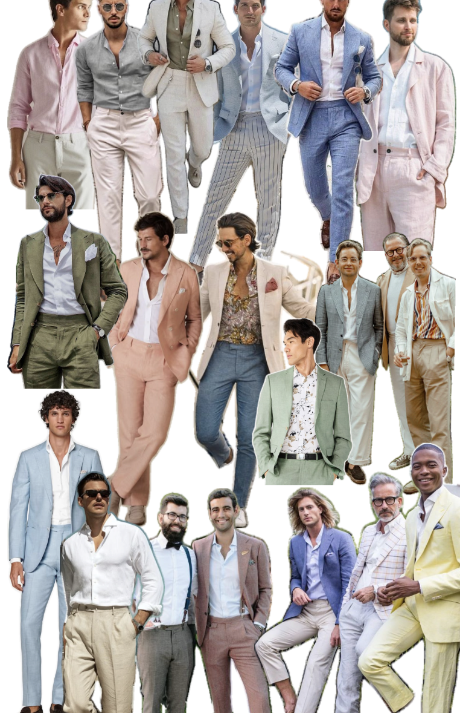

What will the weather be like?
Warm, sunny and beautiful.
Where will the ceremony and reception be held?
The ceremony will be held in a shady outdoor tree grove on the grass — bring mosquito spray, and plan shoes accordingly as there is a longer walk to get there. Stilettos are not recommended! The reception will be in a covered tent on gravel. There will be a pond and stream near the reception site, so be sure to supervise children.
What if I have a dietary restriction?
Let us know if you have dietary restrictions so we can let the venue know!
Will food be served?
Yes! Our venue Common Ground is a regenerative farm that practices sustainable agriculture and all of the food and drinks will be made from local resources grown on the farm or sourced locally on island or in the waters surrounding the island! We'll have appetizers during cocktail hour, followed by a buffet-style dinner.
What kind of shoes should/shouldn't I wear?
The ceremony will be in a grassy outdoor area with a longer walk, so plan accordingly!
What should I wear?
We are aiming for a tropical beach wedding theme (island formal, tropical wedding, garden party etc.) I.e. bright tropical colors or floral dresses, ideally past knee or longer length. Light or colored pants, light colored dress shirts. Jackets not necessary. No shorts, please.
Women's Attire

Men's Attire

What should I wear to the beach competition day?
Wear your best Hawaiian shirt or a similarly Hawaiian outfit! Casual!
Are there any colors that guests should avoid wearing?
The bride will be wearing white and red and the groom will be wearing dark green and red. If possible, we would recommend avoiding white/red dresses and dark green suits.
Is there a gifts registry?
No gifts necessary! Your presence is our present :) We would rather you spend your money going on adventures with us! That said, if you want to make us a banana slug art for our bathroom, we would absolutely love it — and you get points for it!
Are kids welcome?
Yes. Kids are welcome. Some people bringing kids are interested in potentially hiring a babysitter — let us know if you might be interested in this and would like to be connected.
Where should I park?
There will be plenty of parking at the venue.
Where should I stay?
Princeville! We recommend booking an Airbnb or hotel earlier than later. We will be staying at 3824 Punalele Rd, if you would like to stay near us. We've seen a handful of Airbnbs on Airbnb/VRBO in the same neighborhood (<5 min walk).
Will there be dancing?
Yes! We will have a dance floor.
Will there be any activities happening that I need to know about?
We will have a farm tour and/or lei making that our guests are invited to participate in. We will send a survey or email out about this for you to choose.
How will we communicate during the wedding week? Is there a dedicated chat?
Yes! Please join our Slack channel for all wedding week communication — activity coordination, schedule updates, photo sharing, and earning bonus points!
Whom should I contact with questions?
Text either Zinnia or Andrew!